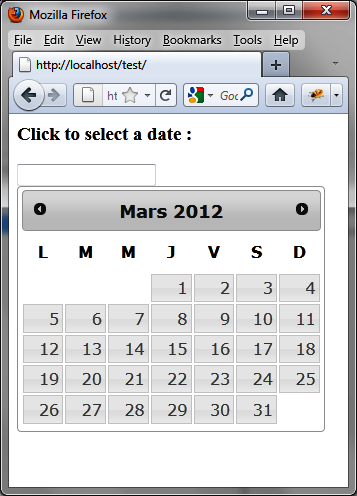
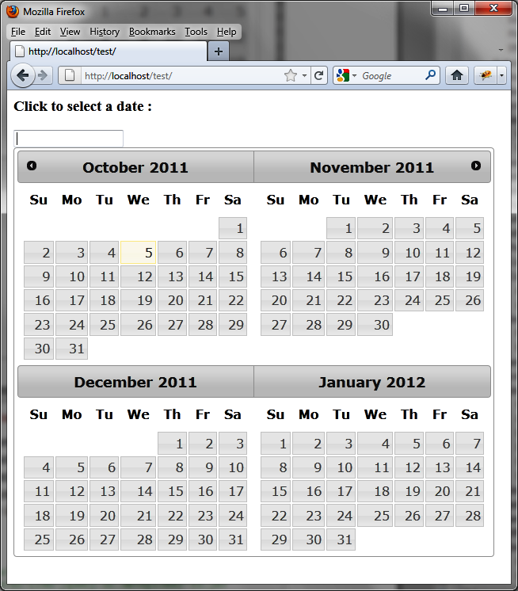
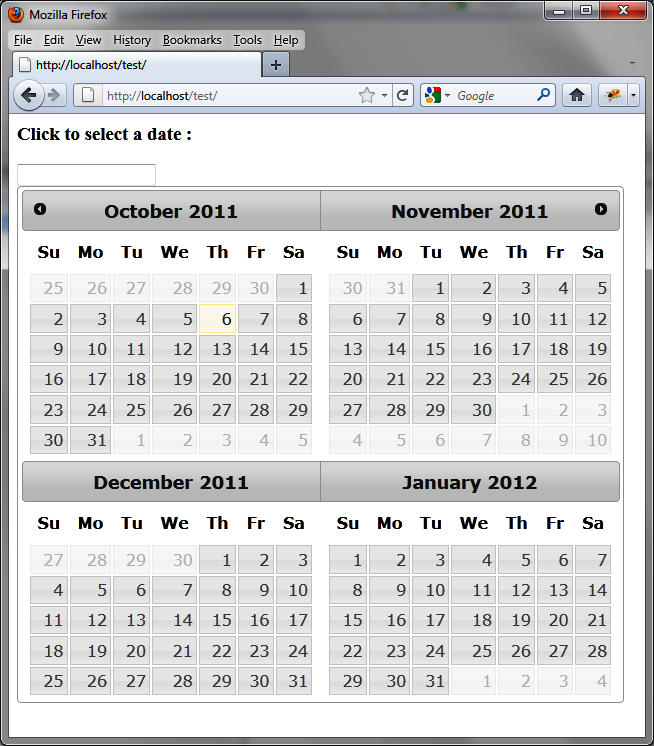
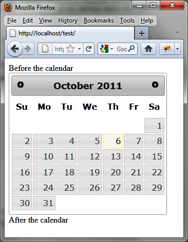
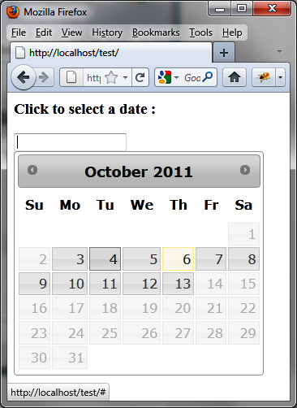
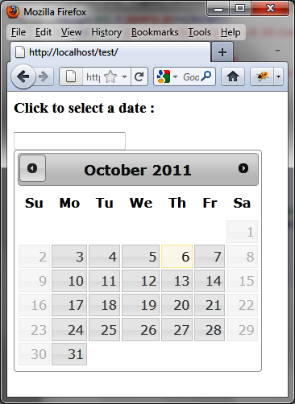
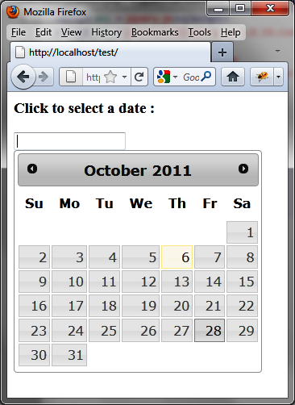
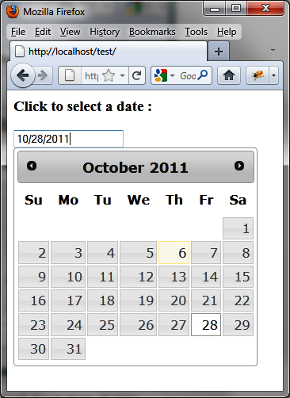
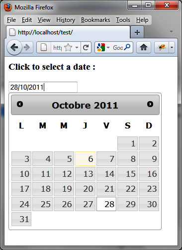
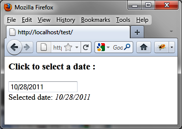

{% include JB/setup %}
{% raw %}
<div>
<div class="book" title="Examples of Using Datepickers"><div class="book"><div class="book"><div class="book"><h1 class="title2"><a id="examples_of_using_datepickers" class="calibre1"></a>Examples of Using Datepickers</h1></div></div></div><p class="calibre7">This section includes some practical examples of using
    datepickers.</p><div class="book" title="Displaying a Calendar in Another Language"><div class="book"><div class="book"><div class="book"><h2 class="title5"><a id="displaying_a_calendar_in_another_languag" class="calibre1"></a>Displaying a Calendar in Another Language</h2></div></div></div><p class="calibre7">To display a calendar in another language (as shown in <a class="ulink" href="ch08s04.html#calendar_in_french" title="Figure 8-4. Calendar in French">Figure 8-4</a>), simply include the JavaScript file
      associated with that language. This file is located in the <em class="calibre4">jqueryui/development-bundle/ui/i18n</em>
      directory, such as the <em class="calibre4">jqueryui/development-bundle/ui/i18n/jquery.ui.datepicker-fr.js</em>
      file for the French language:</p><a id="I_programlisting8_d1e6744" class="firstname"></a><pre class="programlisting">&lt;script src = jquery.js&gt;&lt;/script&gt;
&lt;script src = jqueryui/js/jquery-ui-1.8.16.custom.min.js&gt;&lt;/script&gt;
<span class="firstname"><strong class="userinput">&lt;script src=jqueryui/development-bundle/ui/i18n/jquery.ui.datepicker-fr.js&gt;&lt;/script&gt;</strong></span>

&lt;link rel=stylesheet type=text/css
      href=jqueryui/css/smoothness/jquery-ui-1.8.16.custom.css /&gt;

&lt;h3&gt;Click to select a date :&lt;/h3&gt;
&lt;input id=date /&gt;

&lt;script&gt;

$("input#date").datepicker ();

&lt;/script&gt;</pre><div class="book"><div class="figure"><a id="calendar_in_french" class="firstname"></a><div class="book"><div class="book"><a id="I_mediaobject8_d1e6752" class="firstname"></a></div></div><p class="title4">Figure 8-4. Calendar in French</p></div></div></div><div class="book" title="Displaying Multiple Months in the Calendar"><div class="book"><div class="book"><div class="book"><h2 class="title5"><a id="displaying_multiple_months_in_the_calend" class="calibre1"></a>Displaying Multiple Months in the Calendar</h2></div></div></div><p class="calibre7">Several months can be displayed in the calendar (<a class="ulink" href="ch08s04.html#displaying_several_months" title="Figure 8-5. Displaying several months">Figure 8-5</a>). For this, we use <code class="literal">options.numberOfMonths</code>, which indicates the
      desired number of months or an array <span class="firstname">[x,
      y]</span> that contains the number of rows (x) and columns (y) that
      represent these months.</p><p class="calibre7">Use the following (in bold) to display a calendar of four months
      (two rows of two, shown in <a class="ulink" href="ch08s04.html#displaying_several_months" title="Figure 8-5. Displaying several months">Figure 8-5</a>):</p><a id="I_programlisting8_d1e6775" class="firstname"></a><pre class="programlisting">&lt;script src=jquery.js&gt;&lt;/script&gt;
&lt;script src=jqueryui/development-bundle/ui/jquery-ui-1.8.4.custom.js&gt;&lt;/script&gt;
&lt;script src=jqueryui/development-bundle/ui/i18n/jquery.ui.datepicker-fr.js&gt;
&lt;/script&gt;

&lt;link rel=stylesheet type=text/css
      href="jqueryui/development-bundle/themes/smoothness/jquery.ui.all.css" /&gt;

&lt;body&gt;
&lt;input id=date /&gt;
&lt;/body&gt;

&lt;script&gt;

<span class="firstname"><strong class="userinput">$("input#date").datepicker ({</strong></span>
  <span class="firstname"><strong class="userinput">numberOfMonths : [2, 2]</strong></span>
<span class="firstname"><strong class="userinput">});</strong></span>

&lt;/script&gt;</pre><p class="calibre7">In this example, we see that the cells preceding the first day of
      the month and those after the last day of the month are empty. We can
      ensure that the days of the previous month and those of the next month
      are inserted in these cells to make the calendar more harmonious, as
      shown in <a class="ulink" href="ch08s04.html#joining_days_in_calendars" title="Figure 8-6. Joining days in calendars">Figure 8-6</a>. This is done
      using the <code class="literal">options.showOtherMonths</code>
      option set to <code class="literal">true</code>:</p><a id="I_programlisting8_d1e6796" class="firstname"></a><pre class="programlisting">&lt;script src = jquery.js&gt;&lt;/script&gt;
&lt;script src = jqueryui/js/jquery-ui-1.8.16.custom.min.js&gt;&lt;/script&gt;

&lt;link rel=stylesheet type=text/css
      href=jqueryui/css/smoothness/jquery-ui-1.8.16.custom.css /&gt;

&lt;h3&gt;Click to select a date :&lt;/h3&gt;
&lt;input id=date /&gt;

&lt;script&gt;

$("input#date").datepicker ({
  numberOfMonths : [2, 2],
  <span class="firstname"><strong class="userinput">showOtherMonths : true</strong></span>
});

&lt;/script&gt;</pre><div class="book"><div class="figure"><a id="displaying_several_months" class="firstname"></a><div class="book"><div class="book"><a id="I_mediaobject8_d1e6804" class="firstname"></a></div></div><p class="title4">Figure 8-5. Displaying several months</p></div></div><div class="book"><div class="figure"><a id="joining_days_in_calendars" class="firstname"></a><div class="book"><div class="book"><a id="I_mediaobject8_d1e6812" class="firstname"></a></div></div><p class="title4">Figure 8-6. Joining days in calendars</p></div></div></div><div class="book" title="Displaying a Static Calendar"><div class="book"><div class="book"><div class="book"><h2 class="title5"><a id="displaying_a_static_calendar" class="calibre1"></a>Displaying a Static Calendar</h2></div></div></div><p class="calibre7">It is possible to display a calendar that is directly in the HTML
      page instead of being displayed only when users click in the input field
      associated with it (<a class="ulink" href="ch08s04.html#static_calendar" title="Figure 8-7. Static calendar">Figure 8-7</a>). For this, we
      replace the input field with a <code class="literal">&lt;span&gt;</code> or <code class="literal">&lt;div&gt;</code> element:</p><a id="I_programlisting8_d1e6831" class="firstname"></a><pre class="programlisting">&lt;script src = jquery.js&gt;&lt;/script&gt;
&lt;script src = jqueryui/js/jquery-ui-1.8.16.custom.min.js&gt;&lt;/script&gt;

&lt;link rel=stylesheet type=text/css
      href=jqueryui/css/smoothness/jquery-ui-1.8.16.custom.css /&gt;

&lt;div&gt; Before the calendar &lt;/div&gt;
<span class="firstname"><strong class="userinput">&lt;div id=date&gt;&lt;/div&gt;</strong></span>
&lt;div&gt; After the calendar &lt;/div&gt;

&lt;script&gt;

$("div#date").datepicker ();

&lt;/script&gt;</pre><div class="book"><div class="figure"><a id="static_calendar" class="firstname"></a><div class="book"><div class="book"><a id="I_mediaobject8_d1e6839" class="firstname"></a></div></div><p class="title4">Figure 8-7. Static calendar</p></div></div></div><div class="book" title="Indicating Minimum and Maximum Dates"><div class="book"><div class="book"><div class="book"><h2 class="title5"><a id="indicating_minimum_and_maximum_dates" class="calibre1"></a>Indicating Minimum and Maximum Dates</h2></div></div></div><p class="calibre7">The <code class="literal">options.minDate</code> and
      <code class="literal">options.maxDate</code> options can indicate
      a minimum and maximum date (<a class="ulink" href="ch08s04.html#minimum_and_maximum_dates" title="Figure 8-8. Minimum and maximum dates">Figure 8-8</a>). For example, to prevent the
      selection of a date earlier than three days before the current date or
      later than a week after the current date, we write the following:</p><a id="I_programlisting8_d1e6857" class="firstname"></a><pre class="programlisting">&lt;script src = jquery.js&gt;&lt;/script&gt;
&lt;script src = jqueryui/js/jquery-ui-1.8.16.custom.min.js&gt;&lt;/script&gt;

&lt;link rel=stylesheet type=text/css
      href=jqueryui/css/smoothness/jquery-ui-1.8.16.custom.css /&gt;

&lt;h3&gt;Click to select a date :&lt;/h3&gt;
&lt;input id=date /&gt;

&lt;script&gt;

<span class="firstname"><strong class="userinput">$("input#date").datepicker ({</strong></span>
  <span class="firstname"><strong class="userinput">minDate : −3,           // at least three days before the current date</strong></span>
  <span class="firstname"><strong class="userinput">maxDate : "1w"          // maximum one week after the current date</strong></span>
<span class="firstname"><strong class="userinput">});</strong></span>

&lt;/script&gt;</pre><div class="book"><div class="figure"><a id="minimum_and_maximum_dates" class="firstname"></a><div class="book"><div class="book"><a id="I_mediaobject8_d1e6874" class="firstname"></a></div></div><p class="title4">Figure 8-8. Minimum and maximum dates</p></div></div><p class="calibre7">Suppose the current date is October 6, 2011. Around it, the
      selectable days are shown on a gray background with a darker color,
      while the days that cannot be selected are displayed in a lighter gray
      and do not respond to mouse events.</p></div><div class="book" title="Preventing the Selection of Specific Dates"><div class="book"><div class="book"><div class="book"><h2 class="title5"><a id="preventing_the_selection_of_specific_dat" class="calibre1"></a>Preventing the Selection of Specific Dates</h2></div></div></div><p class="calibre7">The <code class="literal">options.minDate</code> and
      <code class="literal">options.maxDate</code> options can indicate
      a range of selectable dates, but do not allow us to define multiple
      non-concurrent dates. For example, for a firm open Monday to Friday, it
      is not possible with these options to prevent selection of any Saturdays
      and Sundays (<a class="ulink" href="ch08s04.html#saturdays_and_sundays_are_no_longer_avai" title="Figure 8-9. Saturdays and Sundays are no longer available for selection">Figure 8-9</a>).</p><p class="calibre7">The <code class="literal">options.beforeShowDay</code>
      option is a method called for each day displayed on the calendar. For
      each day, it is shown in the returned array as selected or not.</p><p class="calibre7">The <code class="literal">beforeShowDay (date)</code> method
      must return an array whose first element (index 0) contains <code class="literal">true</code> (the date is selected) or <code class="literal">false</code> (not selected):</p><a id="I_programlisting8_d1e6910" class="firstname"></a><pre class="programlisting">&lt;script src = jquery.js&gt;&lt;/script&gt;
&lt;script src = jqueryui/js/jquery-ui-1.8.16.custom.min.js&gt;&lt;/script&gt;

&lt;link rel=stylesheet type=text/css
      href=jqueryui/css/smoothness/jquery-ui-1.8.16.custom.css /&gt;

&lt;h3&gt;Click to select a date :&lt;/h3&gt;
&lt;input id=date /&gt;

&lt;script&gt;

<span class="firstname"><strong class="userinput">$("input#date").datepicker ({</strong></span>
  <span class="firstname"><strong class="userinput">beforeShowDay : function (date)</strong></span>
  <span class="firstname"><strong class="userinput">{</strong></span>
    <span class="firstname"><strong class="userinput">var dayOfWeek = date.getDay ();   // 0 : Sunday, 1 : Monday, ...</strong></span>
    <span class="firstname"><strong class="userinput">if (dayOfWeek == 0 || dayOfWeek == 6) return [false];</strong></span>
    <span class="firstname"><strong class="userinput">else return [true];</strong></span>
  <span class="firstname"><strong class="userinput">}</strong></span>
<span class="firstname"><strong class="userinput">});</strong></span>

&lt;/script&gt;</pre></div><div class="book" title="Preselecting Any Date"><div class="book"><div class="book"><div class="book"><h2 class="title5"><a id="preselecting_any_date" class="calibre1"></a>Preselecting Any Date</h2></div></div></div><p class="calibre7">The preset default date is the current date. To preselect a
      different date, use the <code class="literal">options.defaultDate</code> option or <code class="literal">datepicker ("setDate", date)</code> method.</p><div class="book" title="Using options.defaultDate"><div class="book"><div class="book"><div class="book"><h3 class="title6"><a id="using_options.defaultdate" class="calibre1"></a>Using options.defaultDate</h3></div></div></div><p class="calibre7">While the current date corresponds to October 6, we want to
        preselect the date corresponding to October 28 (<a class="ulink" href="ch08s04.html#preselection_of_a_date_other_than_the_cu" title="Figure 8-10. Preselection of a date other than the current date">Figure 8-10</a>).</p><div class="book"><div class="figure"><a id="saturdays_and_sundays_are_no_longer_avai" class="firstname"></a><div class="book"><div class="book"><a id="I_mediaobject8_d1e6958" class="firstname"></a></div></div><p class="title4">Figure 8-9. Saturdays and Sundays are no longer available for
          selection</p></div></div><a id="I_programlisting8_d1e6963" class="firstname"></a><pre class="programlisting">&lt;script src = jquery.js&gt;&lt;/script&gt;
&lt;script src = jqueryui/js/jquery-ui-1.8.16.custom.min.js&gt;&lt;/script&gt;

&lt;link rel=stylesheet type=text/css
      href=jqueryui/css/smoothness/jquery-ui-1.8.16.custom.css /&gt;

&lt;h3&gt;Click to select a date :&lt;/h3&gt;
&lt;input id=date /&gt;

&lt;script&gt;

$("input#date").datepicker ({
  defaultDate : "3w+1"
});

&lt;/script&gt;</pre><div class="book"><div class="figure"><a id="preselection_of_a_date_other_than_the_cu" class="firstname"></a><div class="book"><div class="book"><a id="I_mediaobject8_d1e6968" class="firstname"></a></div></div><p class="title4">Figure 8-10. Preselection of a date other than the current date</p></div></div></div><div class="book" title="Using datepicker (“setDate”, date)"><div class="book"><div class="book"><div class="book"><h3 class="title6"><a id="using_datepicker_open_parenthesis_quotat" class="calibre1"></a>Using datepicker (“setDate”, date)</h3></div></div></div><p class="calibre7">The preselection of a date can also be done using the <code class="literal">datepicker ("setDate", date)</code> method. As
        before, preselect a date three weeks and a day later than the current
        date:</p><a id="I_programlisting8_d1e6981" class="firstname"></a><pre class="programlisting">&lt;script src = jquery.js&gt;&lt;/script&gt;
&lt;script src = jqueryui/js/jquery-ui-1.8.16.custom.min.js&gt;&lt;/script&gt;

&lt;link rel=stylesheet type=text/css
      href=jqueryui/css/smoothness/jquery-ui-1.8.16.custom.css /&gt;

&lt;h3&gt;Click to select a date :&lt;/h3&gt;
&lt;input id=date /&gt;

&lt;script&gt;

<span class="firstname"><strong class="userinput">$("input#date").datepicker ().datepicker ("setDate", "3w+1");</strong></span>

&lt;/script&gt;</pre><p class="calibre7">With this second method, the difference from the previous is
        that the date input field is initialized with the specified date
        (<a class="ulink" href="ch08s04.html#the_preselected_date_appears_in_the_inpu" title="Figure 8-11. The preselected date appears in the input field">Figure 8-11</a>).</p><div class="book"><div class="figure"><a id="the_preselected_date_appears_in_the_inpu" class="firstname"></a><div class="book"><div class="book"><a id="I_mediaobject8_d1e6993" class="firstname"></a></div></div><p class="title4">Figure 8-11. The preselected date appears in the input field</p></div></div></div><div class="book" title="Special case of dates in foreign formats"><div class="book"><div class="book"><div class="book"><h3 class="title6"><a id="special_case_of_dates_in_foreign_formats" class="calibre1"></a>Special case of dates in foreign formats</h3></div></div></div><p class="calibre7">If you use a calendar in a foreign language, it must also
        indicate the date format in the country selected by the <code class="literal">options.dateFormat</code> option. The default
        format is <code class="literal">"mm/dd/yy"</code> corresponding
        to the calendar in English. To preset a date in a calendar in French,
        for example, we write the following:</p><a id="I_programlisting8_d1e7009" class="firstname"></a><pre class="programlisting">&lt;script src = jquery.js&gt;&lt;/script&gt;
&lt;script src = jqueryui/js/jquery-ui-1.8.16.custom.min.js&gt;&lt;/script&gt;
<span class="firstname"><strong class="userinput">&lt;script src=jqueryui/development-bundle/ui/i18n/jquery.ui.datepicker-fr.js&gt;&lt;/script&gt;</strong></span>

&lt;link rel=stylesheet type=text/css
      href=jqueryui/css/smoothness/jquery-ui-1.8.16.custom.css /&gt;

&lt;h3&gt;Click to select a date :&lt;/h3&gt;
&lt;input id=date /&gt;

&lt;script&gt;

$("input#date").datepicker ({
  <span class="firstname"><strong class="userinput">dateFormat : "dd/mm/yy"          // required to use setDate</strong></span>
}).datepicker ("setDate", "3w+1");

&lt;/script&gt;</pre><p class="calibre7">The result is shown in <a class="ulink" href="ch08s04.html#a_preselected_date_in_a_french_calendar" title="Figure 8-12. A preselected date in a French calendar">Figure 8-12</a>.</p><div class="book"><div class="figure"><a id="a_preselected_date_in_a_french_calendar" class="firstname"></a><div class="book"><div class="book"><a id="I_mediaobject8_d1e7024" class="firstname"></a></div></div><p class="title4">Figure 8-12. A preselected date in a French calendar</p></div></div></div></div><div class="book" title="Performing an Ajax Request When Selecting a Date"><div class="book"><div class="book"><div class="book"><h2 class="title5"><a id="performing_an_ajax_request_when_selectin" class="calibre1"></a>Performing an Ajax Request When Selecting a Date</h2></div></div></div><p class="calibre7">It is common to perform an Ajax request for date selection. In
      this example, we choose a date from the calendar and transmit it to the
      server, which returns the date back to us. This validates the full path
      of information transmission:</p><a id="I_programlisting8_d1e7036" class="firstname"></a><pre class="programlisting">&lt;script src = jquery.js&gt;&lt;/script&gt;
&lt;script src = jqueryui/js/jquery-ui-1.8.16.custom.min.js&gt;&lt;/script&gt;

&lt;link rel=stylesheet type=text/css
      href=jqueryui/css/smoothness/jquery-ui-1.8.16.custom.css /&gt;

&lt;h3&gt;Click to select a date :&lt;/h3&gt;
&lt;input id=date /&gt;
&lt;div id=datereturn&gt;&lt;/div&gt;

&lt;script&gt;

<span class="firstname"><strong class="userinput">$("input#date").datepicker ({</strong></span>
  <span class="firstname"><strong class="userinput">onSelect : function (dateText)</strong></span>
  <span class="firstname"><strong class="userinput">{</strong></span>
    <span class="firstname"><strong class="userinput">var data = { date : dateText };</strong></span>
    <span class="firstname"><strong class="userinput">$.ajax ({</strong></span>
    <span class="firstname"><strong class="userinput">url : "action.php",</strong></span>
    <span class="firstname"><strong class="userinput">data : data,</strong></span>
    <span class="firstname"><strong class="userinput">complete : function (xhr, result)</strong></span>
    <span class="firstname"><strong class="userinput">{</strong></span>
      <span class="firstname"><strong class="userinput">if (result != "success") return;</strong></span>
      <span class="firstname"><strong class="userinput">var response = xhr.responseText;</strong></span>
      <span class="firstname"><strong class="userinput">$("#datereturn").html (response);</strong></span>
    <span class="firstname"><strong class="userinput">}</strong></span>
  <span class="firstname"><strong class="userinput">});</strong></span>
  <span class="firstname"><strong class="userinput">}</strong></span>
<span class="firstname"><strong class="userinput">});</strong></span>

&lt;/script&gt;</pre><p class="calibre7">The text returned by the server will be inserted into the <code class="literal">&lt;div&gt;</code> element with the date<span class="firstname">return</span> identifier. The code on the server is
      shown in the <em class="calibre4">action.php</em> file below:</p><a id="I_programlisting8_d1e7099" class="firstname"></a><pre class="programlisting">&lt;?
  $date = $_REQUEST["date"];

  $txt = "Selected date: &lt;i&gt; $date &lt;/i&gt;";
  $txt = utf8_encode($txt);
  echo ($txt);
?&gt;</pre><p class="calibre7">Notice that the URL <a class="ulink" href="http://localhost/test">http://localhost/test</a> is
      an HTTP URL. If it is not, the Ajax call will not work.</p><p class="calibre7">After being selected, the date appears below the input field
      (<a class="ulink" href="ch08s04.html#the_selected_date_is_transmitted_to_the" title="Figure 8-13. The selected date is transmitted to the server">Figure 8-13</a>).</p><div class="book"><div class="figure"><a id="the_selected_date_is_transmitted_to_the" class="firstname"></a><div class="book"><div class="book"><a id="I_mediaobject8_d1e7112" class="firstname"></a></div></div><p class="title4">Figure 8-13. The selected date is transmitted to the server</p></div></div></div></div></div>

{% endraw %}

